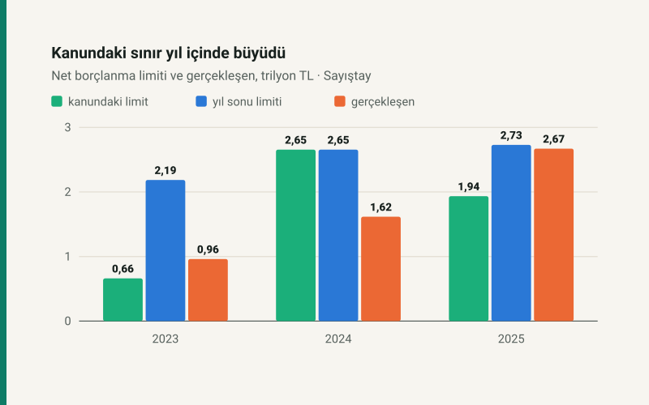

Kısa cevap
Toplamda bütçe tuttu. 2025 için verilen 16,03 trilyon TL başlangıç ödeneğine karşı 16,02 trilyon TL harcandı, fark %−0,1. Genel bütçe açığı da kanundaki tahminin %0,4 üstünde kaldı.
Borçlanma sınırı ise yıl içinde genişledi. Bütçe Kanunu'nun çizdiği net borçlanma limiti 1.935,4 milyar TL'ydi. İki kez %5 artırıldı, Aralık 2025'te çıkan kanunla geriye dönük 595,0 milyar TL eklendi ve 2.728,7 milyar TL oldu. Gerçekleşen 2.670,3 milyar TL. Sınır hukuken aşılmadı; son ek olmasaydı 536,5 milyar TL aşılacaktı.
Sayıştay tutarları değiştirmedi, bulguları yazdı. Bildirim, ödenek ve gider tutarlarını değiştiren bir tespit olmadığını söylüyor. Aynı raporlar Meclis'e sunulan idarelerde 1.102 bulgu sayıyor.
Kesin hesap nedir, neden şimdi konuşuluyor?
Bütçe kanunu bir yetkidir: Meclis yılbaşından önce ne kadar harcanabileceğini onaylar. Kesin hesap ise o yılın sonucudur ve yine Meclis'ten geçer (Anayasa m.161). Sayıştay arada bağımsız karşılaştırmayı yapar ve Genel Uygunluk Bildirimi'ni sunar. TBMM Plan ve Bütçe Komisyonu 2027 bütçe teklifini ve 2025 kesin hesap teklifini bu yüzden Sayıştay raporlarıyla birlikte görüşüyor: gelecek yılın yetkisi istenirken iki yıl önceki yetkinin nasıl kullanıldığı önde durur.
Bu yazı 2025'in rakamlarını Sayıştay'ın kendi tablolarından okur. 2027 bütçesinde faiz ve vergi yazısı ise teklifin ileriye dönük tarafını anlatıyor.
Toplamlar kanundaki rakama yakın
| Kalem | Kanunda | Sonuç | Fark |
|---|---|---|---|
| Konsolide ödenek ve brüt gider | 16.034,4 | 16.015,4 | %−0,1 |
| Genel bütçe gideri | 14.605,8 | 14.475,4 | %−0,9 |
| Genel bütçe geliri | 12.670,4 | 12.533,0 | %−1,1 |
| Genel bütçe vergi geliri | 11.138,8 | 11.049,8 | %−0,8 |
| Genel bütçe açığı | −1.935,4 | −1.942,4 | %0,4 |
Bu tablo ödeneklerin yerinde kaldığını söylemez. Yıl içinde ödenek toplamı 16.769,0 milyar TL'ye çıktı, 753,5 milyar TL'si kullanılmadı. Yedek ödenek 111,7 milyar TL'den başlayıp aktarmalarla 172,7 milyar TL'ye ulaştı ve yedek ödenek hesabından toplam 260,1 milyar TL idarelere aktarıldı.
Asıl hareket idareler arasında
Toplam yerinde dururken idarelerin harcaması başlangıç ödeneğinden çok uzaklaşabiliyor. Sayıştay'ın genel bütçeli idareler cetvelinden, başlangıç ödeneği 30 milyar TL'nin üstündekiler arasında en büyük sapmalar:
| İdare | Başlangıç | Gider | Sapma |
|---|---|---|---|
| Çevre, Şehircilik ve İklim Değişikliği Bakanlığı | 219,3 | 360,3 | %+64,3 |
| Kültür ve Turizm Bakanlığı | 53,2 | 67,1 | %+26,2 |
| Gelir İdaresi Başkanlığı | 47,5 | 53,1 | %+11,6 |
| Afet ve Acil Durum Yönetimi Başkanlığı | 266,9 | 242,9 | %−9,0 |
| Çalışma ve Sosyal Güvenlik Bakanlığı | 865,5 | 513,5 | %−40,7 |
| Strateji ve Bütçe Başkanlığı | 290,2 | 4,8 | %−98,4 |
Strateji ve Bütçe Başkanlığı satırı beklenen bir hareket: yedek ödenek bu idarenin bütçesinde durur ve yıl içinde başka idarelere aktarılır. Diğer sapmaların nedenini bildirim satır satır açıklamıyor; tablo yalnız tutarları verir. Bir not daha: kullanılmayan ödeneğin en büyük tek parçası 224,7 milyar TL ile Milli Savunma Bakanlığı satırında, genel bütçedeki toplamın %39,4 kadarı.
Borç sınırı üç adımda genişledi
Bütçe Kanunu'nun denge maddesi, ödenek ile gelir tahmini arasındaki farkı net borçlanma limiti yapar. 4749 sayılı Kanun bu limite iki kez %5 ekleme yetkisi tanır. 2025'te ikisi de kullanıldı: 7 Ağustos'ta Bakanlık onayıyla, 30 Ağustos'ta 10351 sayılı Kararla. Sonra 4 Aralık 2025 tarihli 7566 sayılı Kanun, 1 Ocak 2025'ten geçerli olmak üzere 595,0 milyar TL ekledi.
| Yıl | Kanunda | %5 + %5 ile | Yıl sonu limiti | Gerçekleşen | Gerçekleşen / kanundaki |
|---|---|---|---|---|---|
| 2023 | 660,9 | 728,6 | 2.185,9 | 961,2 | %145,4 |
| 2024 | 2.654,8 | artırılmadı | 2.654,8 | 1.616,0 | %60,9 |
| 2025 | 1.935,4 | 2.133,7 | 2.728,7 | 2.670,3 | %138,0 |
Üç yıl tek bir kalıp göstermiyor. 2024'te limit hiç artırılmadı, gerçekleşen kanundakinin %60,9 kadarı oldu. 2023'te 7456 sayılı Kanun limiti %5'li artışlardan sonraki tutarın üç katına çıkardı, gerçekleşen kanundakinin %145,4 kadarıydı. 2025'te ise borçlanma, %5'li iki artıştan sonraki sınırı da 536,5 milyar TL geçti ve onu karşılayan kanun yılın son ayında çıktı.
Sayıştay'ın sonucu net: limit aşılmamıştır. Bu yazı da aksini söylemiyor. Ölçtüğümüz şey, Bütçe Kanunu'ndaki rakamın bir tavan gibi okunamayacağı: gerçekleşen, kanundaki limitin %138,0 kadarı. Gerçekleşen net borçlanma genel bütçe açığından 727,9 milyar TL büyük; bildirimin bu bölümü farkın kalemlerini dökmüyor.
Ölçek için: 2025'te her 100 TL net vergi tahsilatına karşılık 24,2 TL net borçlanma yapıldı. Yıl sonunda devlet borçları stoku 13,60 trilyon TL, bir yıl öncesinden %47,7 fazla.
Sayıştay ne dedi, ne demedi?
İki farklı soruya iki farklı cevap var, haberlerde ikisi sık karışıyor.
- Tutarlar doğru mu? Bildirim, denetim raporlarında ödenek ve gider tutarlarında “değişikliğe yol açan bir tespitin bulunmadığı” sonucuna varıyor ve kesin hesaptaki tutarların kabulünün uygun olacağını bildiriyor.
- İşlemler kusursuz mu? Hayır, bildirim bunu söylemiyor. Dış Denetim Genel Değerlendirme Raporu, Meclis'e sunulan idare raporlarında 1.102 bulgu sayıyor: 783 mevzuata uygunluk, 278 mali tablo, 41 iç kontrol. Mahallî idareler ve şirketleri ile yatırım izleme birimleri ayrıca 9.681 bulgu taşıyor; bu rakam taslak raporlardan.
Bulgu sayısı tek başına usulsüzlük tutarı değildir; bir bulgu kayıt hatası da olabilir. Rapor sayısı ve idare büyüklüğü değişirken yıllar arası kıyas da yanıltır.
Çalışanı ilgilendiren başlık SGK alacakları. Rapor, SGK'nın bilgi sistemleri arasında entegrasyon sağlanmadığını ve alacaklara ilişkin işlemlerin tahakkuk esasına göre yapılmaması nedeniyle mali tabloların kurum alacağını tam yansıtmadığını yazıyor. Tahsilatların bir kısmı önce emanet hesabına alınıyor. Bu, sizin primlerinizin kaybolduğu anlamına gelmez; kurumun tablolarının eksik olduğu anlamına gelir. Kendi kaydınızı e-Devlet hizmet dökümünden bordronuzla karşılaştırabilirsiniz.
2027 teklifini okurken
2027 teklifindeki açık 3.865,0 milyar TL. Aynı %5 + %5 yetki kullanılırsa sınır yaklaşık 4.261,2 milyar TL olur. Hesap yaklaşıktır: yasal limit genel bütçe ödenek ve gelirinden, buradaki açık merkezî yönetim tablosundan.
- Kanundaki rakam bir yetki ve tahmindir. 2025, toplamların tutabildiğini ama idareler arası dağılımın ve borçlanma sınırının yıl içinde değişebildiğini gösteriyor.
- Kesin sonuç sonradan okunur. Takvim aynı giderse 2027'nin kesin hesabı 2028'de Meclis'e gelir ve 2029 bütçesiyle görüşülür.
- Bu rakamlar kendi maaş ya da vergi hesabınızı değiştirmez. Sizi etkileyen tarihler mali takvimde.
Varsayımlar ve sınırlar
- Rakamlar Sayıştay'ın bildirim ve raporlarından aktarıldı. Tabloların kendi toplamları otomatik testle denetlenir; hesaplar bu sitenindir.
- Konsolide tutarlar brüttür. Genel bütçe karşılaştırması aynı kapsamı korumak için ayrı satırdadır; net merkezî yönetim açığı 1.813,5 milyar TL'dir.
- "Ek olmasaydı aşılırdı" ifadesi aritmetiktir. Daha düşük bir sınırda borçlanmanın aynı kalacağını varsaymaz.
- Yüzde sapması başlangıç ödeneği 30 milyar TL'nin altındaki idarelerde yanıltıcı olduğu için tabloya alınmadı. Sapmanın nedeni her idare için bildirimde yazılı değildir.
- Komisyon takvimi ikincil kaynaktan okundu: görüşmeler 21 Ekim'de başladı, son gün 27 Kasım olarak ilan edildi. Genel Kurul tarihi bu yazıda yok.
Kaynaklar
- Sayıştay, 2025 Yılı Genel Uygunluk Bildirimi, Eylül 2026: Tablo 2, 10, 11, 15, 22, 29, 30, EK 1
- Sayıştay, 2025 Yılı Dış Denetim Genel Değerlendirme Raporu, Eylül 2026: Tablo 2, 3, bölüm 4.4
- Karşılaştırma: Sayıştay 2024 ve 2023 Genel Uygunluk Bildirimleri
- 2027 Yılı Bütçe Gerekçesi, Tablo 1
- Anayasa m.161; 5018 sayılı Kanun m.42; 6085 sayılı Kanun m.41; 4749 sayılı Kanun m.5
Sık sorulan sorular
Kesin hesap nedir?
Bütçe kanununun uygulama sonucunu gösteren kanundur. Meclis yıl başında yetki verir, yıl bitince kesin hesapla sonucu görür (Anayasa m.161).
Sayıştay 2025 kesin hesabı için ne dedi?
Ödenek ve gider tutarlarında değişikliğe yol açan bir tespit olmadığını, tutarların kabulünün uygun olacağını bildirdi. Bu, denetim bulgusu olmadığı anlamına gelmez; Meclis'e sunulan idare raporlarında 1.102 bulgu var.
2025'te borçlanma limiti aşıldı mı?
Hayır. Limit 2.728,7 milyar TL'ye çıkarıldı, gerçekleşen 2.670,3 milyar TL oldu. Kanundaki ilk limit ise 1.935,4 milyar TL'ydi.
Bu rakamlar maaşımı etkiler mi?
Doğrudan değil. Vergi dilimleri, asgari ücret ve zamlar ayrı kararlarla belirlenir; tarihleri mali takvimdedir.